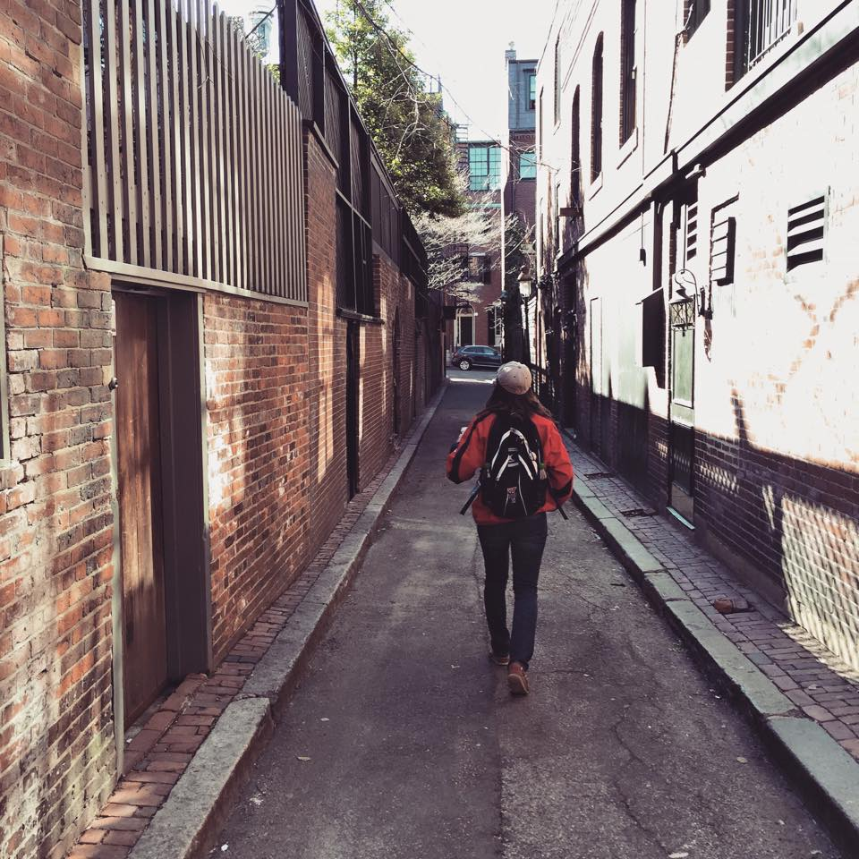
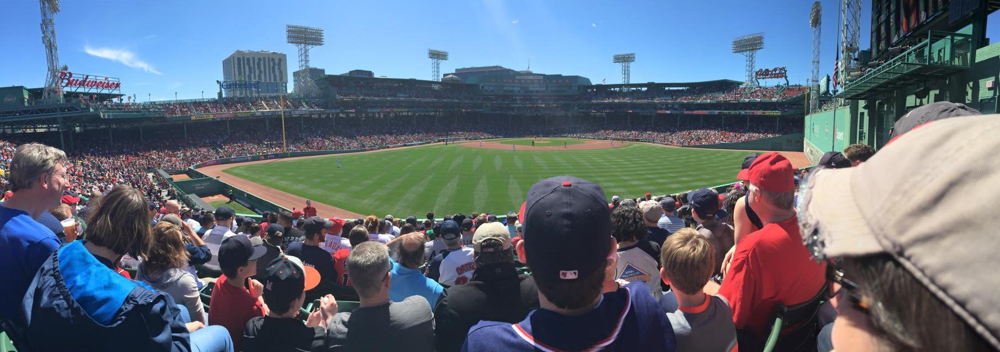
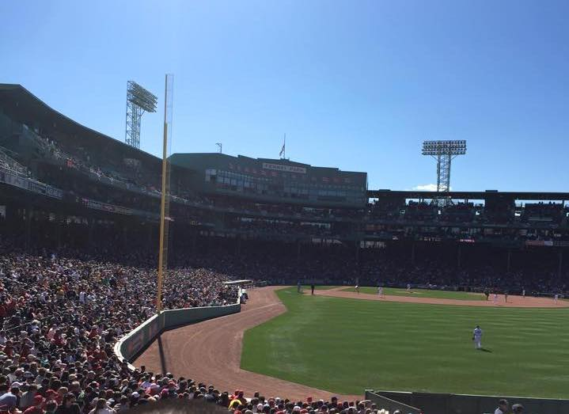

Adventures to Boston
One of the highlights of our senior year at Virginia Tech was taking a spontanious trip to Boston to see the Nationals play the Red Sox. It was an epic trip involving planes, trains, cars, and walking many miles.
Drive to Washington
We left Blacksburg, VA around 10:00pm on Tuesday night. Drove up and arrived to Washington DC around 2:00am on Wednesday. Unfortunately we didn't realize that the airport does not open until 4:30, so we had to kill a couple hours trying to sleep in the uncomfortable chairs.
Arriving in Boston
Our 6:30am flight to Boston departed on time. Fell asleep pretty much right after take off. The flight was supposed to be an hour and a half, but we arrived in just over an hour. Took the T from Logan to the Backbay area
Exploring Boston
The baseball game didn't start until 1:37 so we had a good amount of time to explore Boston. Got some much needed coffee and then went walking all around the city. Ended up by the harbor exploring areas along the way. From the harbor we decided to walk the 4.5 miles to Fenway. Long walk, but got to see the city and made a few more coffee stops along the way. After getting to Lansdowne Street we got a quick meal at Loretta's Last Call outside the park.
Washington Nationals vs Boston Red Sox
Walking up the stairs to the bleachers at Fenway was an incredible sight. Huge sense of accomplishment that after a long night and morning of traveling that we finally arrived at our goal. Chuckled at the fact that while we were up in Boston, the rest of our classmates were sitting in lecture. Our first seats were in the Center Field bleachers. Was cool to be close to the Green Monster.
After a few innings we wanted to explore the park more. So we went and got some Fenway Franks and a couple beers and wandered around. Found some seats in RF where we stayed for a bit. Then moved to the first base line before moving all the way down just four rows from home plate. The Nationals won the game, but we felt we were the real winners for making it up to Boston all the way from Blacksburg.
Back to Blacksburg
After the game we got some dinner and then headed back to Backbay where we caught an overnight train back to Union Station in DC. Once arriving we had to take the DC Metro back to the airport where we left the car. Once we got the car we drove back to Blacksburg and arrived just in time to make the afternoon classes... which I skipped and went to bed.